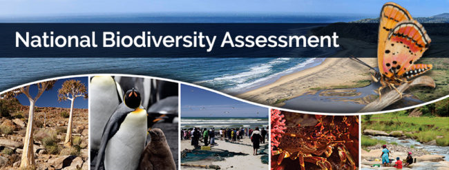

![]()
Summary
Use this section to summarise highlights or key messages of your page Use bold text to highlight your main points.
Remember to use links to relevant sections elsewhere on the page. To add a link, click on Insert > Link. In the pop-up box, change the link to selection from URL to Heading, and select the heading of the section you want to link to. The display text will default to the header name. If you want to use different text, you need to tag your header. Select the header, and click on the three dots to the right. In the pop-up box, give the header a tag using the ID text box. The tag must start with #, e.g. #summary. Now you can link to it using the following syntax: display text. (Check how it is configured in Source view).
South Africa’s rivers are incredibly diverse and vital for our well-being. We have an interim typology in place and are currently at work on an updated national system to understand and manage our rivers as effectively as possible. The proposed river typology update will contribute significantly towards ensuring their long-term health and the benefits they provide to all South Africans.

Page body
Organise this part of your webpage into sections and subsections as you see fit. Use it to give background, and present your results and discussions of results.
Label main sections using Header 2. Header 1 is the style reserved for page titles at the top - do not use it anywhere else on the page. Use consecutive higher Header numbers to label subsections.
Subsection 1 (Header 3)
Subsection 2 (Header 4)
etc.
Inserting footnotes and references
Footnotes
Use the built-in footnotes function to add notes to your text where necessary. Use notes sparingly - mainly to clarify terms.
Some text with a footnote1.
References
See Quarto documentation for different ways to cite references. For reference citations to work, there needs to be a .bib file stored in the same folder as the .qmd file. Give the .bib file a unique name (i.e. change it from the default references.bib). Make sure to edit the yaml header to reference the correct .bib file. See this bibtex reference for the formats for different types of references
Citing a journal article1.
Citing a book2.
Citing a book chapter3.
Citing a technical report4.
Code blocks for graphs, maps and tables
Use these code blocks to ensure that your graphs maps and tables are consistently numbered and labeled. Using these code blocks also lets you cross-reference tables and figures in the text.
Graphs and maps
The #| label: line in the code below makes it possible to reference the graph in the text. It must always start with fig- for Quarto to recognise it as a figure, and to apply correct styling and numbering to the figure caption. Each figure in your document must have a unique fig- name. To reference the figure in the text, use Insert > Cross Reference, and look for the figure lable in the list.
Add an appropriate descriptive caption next to fig-cap.
Tables
Follow the same system for creating tables. Do not use the visual editor to insert tables, as this will create a table in Quarto’s default style, and you will have to type in the data manually, making the table less reproducible if your data changes. Note that here you must use the tbl- prefix to ensure that quarto recognises it as a table.
Information boxes
Additional information can be added in collapsible information boxes using callout blocks. The callout block is styled using the scss file associated with this template, therefore it does not look exactly like the standard Quarto callouts. If you want to cross reference the box in the text, you need to give it a uniqe name starting with # this will allow you to reference it as Box 1.
Technical documentation
The last section of your page should contain links to technical documentation of the indicators and analyses presented on your page. Technical documentation can be in a variety of formats. It is not necessary to have all these in place, but there should at least be a technical report available in a public document repository (e.g. OPUS) or a published paper describing your methods. Edit and adapt the suggested layout below depending on what technical documentation is applicable to your page.
Code repository: github.com/SANBI-NBA/templates
Data repository: OPUS, Figshare, KNB or BGIS - link to the specific page within these websites containing your data.
Technical report: Add link to technical report in PDF format
Other publications
Jordaan, M.S., et al. 2020. Protected areas and endemic freshwater fishes of the Cape Fold Ecoregion: missing the boat for fish conservation? Frontiers in Environmental Science 8:502042. doi: 10.3389/fenvs.2020.502042
References
Notes
Insert a basic footnote by using the Visual editor’s Insert > Footnote. Type the footnote text into the box provided. Quarto will automatically number your references and footnotes in the order that they are inserted in the text.↩︎